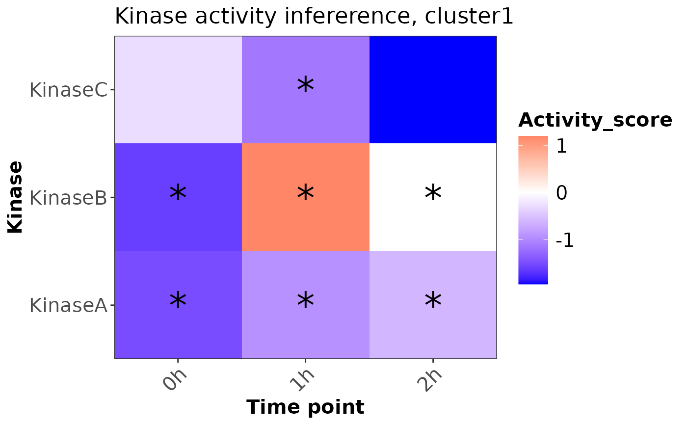

plotKinaseTimeSeries creates a heatmap to visualize the result of
kinase activity inference for time-series clustering, with significant
activity changes marked.
Usage
plotKinaseTimeSeries(scoreTab, pCut = 0.05, clusterName = "cluster1")
Arguments
- scoreTab
A data frame containing kinase activity scores,
p-values, and time points.
- pCut
A numeric value specifying the p-value threshold for
significance. Default is 0.05.
- clusterName
A character string specifying the name of the
cluster for the plot title. Default is "cluster1".
Value
A ggplot2 object representing the heatmap of kinase activity
score.
Details
The heatmap shows kinase activity scores over different time points.
Significant activities (based on the specified p-value threshold) are
marked with an asterisk (*). The color gradient represents the activity
score, with blue indicating low activity, red indicating high activity, and
white as the midpoint.
Examples
# Example usage:
scoreTab <- data.frame(
timepoint = rep(c("0h", "1h", "2h"), each = 3),
source = rep(c("KinaseA", "KinaseB", "KinaseC"), times = 3),
score = runif(9, -2, 2),
p_value = runif(9, 0, 0.1)
)
plotKinaseTimeSeries(scoreTab)
